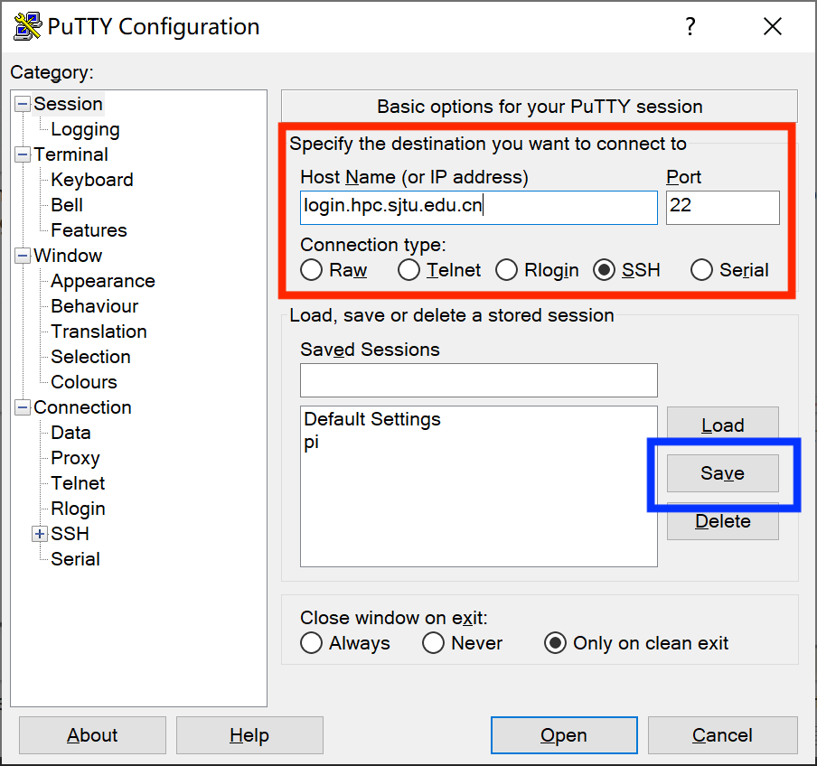
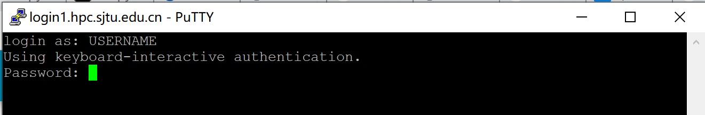
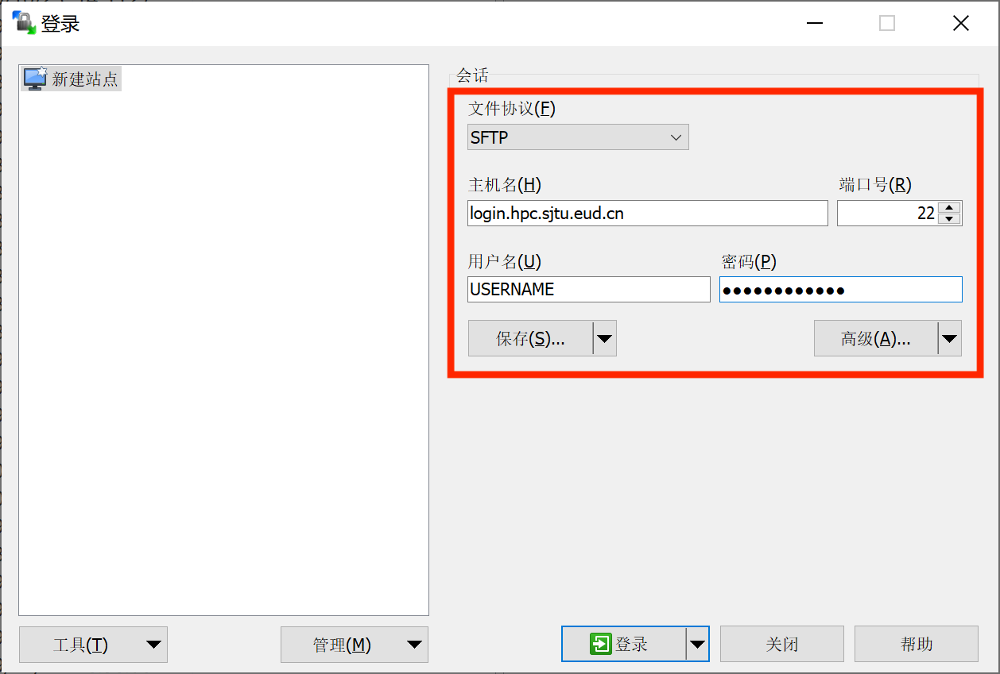

SJTU PI2.0-超算简明教程
Author: Kyle Chen
登陆超算节点
登陆地址(以下四个IP均可)
login.hpc.sjtu.edu.cnlogin1.hpc.sjtu.edu.cnlogin2.hpc.sjtu.edu.cnlogin3.hpc.sjtu.edu.cn
登陆方法：
Unix/Mac/Linux
使用内置ssh程序，通过命令行登陆hpc服务器。以下代码示例，以用户stu438给出
ssh stu438@login.hpc.sjtu.edu.cn根据命令行提示符Password输入密码（注意，密码输入过程中，终端信息不回更新），输入完成后Enter确认登陆。
Windows
使用PuTTY进行登陆

运行PuTTY，在图中红框处输入服务器信息，单击蓝框处保存（以免下次使用重复输入）

根据弹出终端窗口显示指令，输入账号密码（注意，密码输入过程中，终端信息不回更新），Enter登录。
文件传输
Unix/Mac/Linux
使用内置scp或sftp程序上传或下载文件。下面演示使用scp进行文件传输：
xxxxxxxxxx# Upload local folder data to the remote folder ~/tmp/ on serverscp -r data/ stu438@login.hpc.sjtu.edu.cn:~/tmp/# Download ~/data.out to current local path from remote serverscp stu438@login.hpc.sjtu.edu.cn:~/data.out ./scp的使用方法与cp命令类似，其他参数设定可以参考cp命令。
Windows
使用WinSCP进行文件传输。

按照上图红框内所示，输入设置，其中用户名与密码为hpc服务器登陆的账号密码，随后单击保存，单击登陆与服务器建立连接。

左侧红框内为本地文件列表，右侧蓝框内为远程服务器文件列表，可以通过鼠标拖拽的方式进行文件上传、下载。
Quick Start
在HPC服务器上通过SLURM提交Python代码，进行Tensorflow相关运算。
登陆服务器
通过
scp或WinSCP上传测试代码(例：tf_test.py)首次登陆环境搭建
xxxxxxxxxx# 使用module加载miniconda环境module load miniconda3# 初始化conda环境(仅第一次配置需要)conda init# 关闭conda base环境登陆自启动(不关闭会导致SLURM脚本无法正常运行)conda config --set auto_activate_base False# 创建名为tf-env的python环境，python版本为3.7conda create -n tf-env python3.7# 激活tf-env环境source activate tf-env# 安装科学计算必要python库conda install numpy scipy matplotlib# 安装tensorflow-gpu 2(默认版本)pip install tensorflow-gpu# 若想安装tensorflow-gpu 1.15，请勿同时安装两个版本，容易出错。pip install tensorflow-gpu==1.15创建SLURM脚本
- 方法一：在远程服务器通过
vi/vim直接编辑创建。 - 方法二：在本地创建纯文本文件，保存并上传。
脚本范例
slurm_test.shx
#SBATCH -J xzq_test#SBATCH -p dgx2#SBATCH -N 1#SBATCH -n 1#SBATCH --ntasks-per-node=1#SBATCH --gres=gpu:1#SBATCH --output=%j.out#SBATCH --error=%j.err#SBATCH --time=00:30:00#SBATCH --mail-type=end#SBATCH --mail-user=your_email@sjtu.edu.cnmodule load cuda/10.1.243-gcc-4.8.5 # for Tensorflow >= 2.0module load cuda/10.0.130-gcc-4.8.5 # for Tensorflow == 1.15module load cudnn/7.6.5.32-10.1-linux-x64-gcc-4.8.5module load miniconda3# activate your python environmentsource activate tf-env# if you want to switch working directory# cd working_dir/python -c "import tensorflow as tf; \print('Num GPUs Available: ', len(tf.config.experimental.list_physical_devices('GPU')));”# run python script# python test_scipt.py- 方法一：在远程服务器通过
使用
sbatch命令递交脚本xxxxxxxxxxsbatch slurm_test.sh终端将返回如下结果：
xxxxxxxxxxSubmitted batch job 961975表明slurm脚本成功递交，任务id为961975。该任务号将成为查看该任务状态，并对其进行其他操作的手段。
查看脚本运行状态
sacct命令返回如下结果，通过任务id找到对应任务的状态。
xxxxxxxxxxJobID JobName Partition Account AllocCPUS State ExitCode------------ ---------- ---------- ---------- ---------- ---------- --------960304 test dgx2 acct-cfte+ 1 FAILED 1:0960304.batch batch acct-cfte+ 1 FAILED 1:0960304.exte+ extern acct-cfte+ 1 COMPLETED 0:0960467 test dgx2 acct-cfte+ 1 COMPLETED 0:0960467.batch batch acct-cfte+ 1 COMPLETED 0:0960467.exte+ extern acct-cfte+ 1 COMPLETED 0:0961975 test dgx2 acct-cfte+ 1 RUNNING 0:0961975.exte+ extern acct-cfte+ 1 RUNNING 0:0查看运行结果
sacct返回个任务状态中，State列可以能出现如下状态：RUNNING: 任务仍在运行；
FAILED: 任务报错，前往961975.err文件，查看错误日志
xxxxxxxxxxcat 961975.errCOMPLETED：任务运行结束，前往961975.out文件，查看输出结果
xxxxxxxxxxcat 961975.out
常见问题
重置密码：
首次登陆后，建议尽快使用
passwd命令重置密码xxxxxxxxxx[stu438@login2 ~]$ passwdChanging password for user stu438.Current Password:New Password:Retype new password:passwd: all authentication tokens updated successfully.密码规范
不要使用固定的常用密码
不要使用有意义的字符串
密码长度至少8位
密码中至少包含字母和数字
服务器连接因超时或网络不稳定而断开

在PuTTY登陆界面左侧设置选项栏中选择Connection，在右侧对应红框处，设置保持活跃时间 240。随后回到左侧Session对应服务器登陆界面，保存设置，并登陆即可。
Windows本地编辑后上传的脚本，运行报错如下：
xxxxxxxxxxsbatch: error: Batch script contains. DOS line breaks (\r\n)sbatch: error: instead of expected UNIX linne breaks (\n).解决方案：
通过vim二进制模式打开slurm脚本进行编辑。
xxxxxxxxxxvim -b slurm_test.sh在vim中使用命令模式替换DOS换行符
xxxxxxxxxx:%s/^M//g其中^为ctrl+v, M为ctrl+m。修改完后退出vim。
xxxxxxxxxx:wq文件路径问题
由于Windows和Linux的文件系统不同，路径的文件分割符不同。在Windows中，文件分割符通常为
\\，而在Linux/Mac中，文件分割符为/。例如，Windows
xxxxxxxxxxD:\\Documents\\data\\raw_data.npyLinux/Mac
xxxxxxxxxx/home/user/Documents/data/raw_data.npy
请注意区分。
任务超时被中断问题。
在SLURM任务脚本中，修改脚本开头脚本参数中
#SBATCH --time=00:30:00- 其中
00:30:00表示最大运行运行时间30分钟，超时即会被slurm强制终止。 - 适当设定足够长的最大运行时间，可保证程序完整运行。
- 注意，
dgx2队列单任务最大允许运行时长为7天7-00:00:00。 - 对于普通用户，设置过长的最大运行时间，可能导致任务长时间处于等待（PD）状态，无法正常运行。
- 其中
查看队列状态-
sinfo命令xxxxxxxxxxsinfo
如上图所示，红框内为超算中心的GPU节点，dgx2，的状态。
蓝框内显示队列状态：
up: 正常上线状态，可正常提交任务；down：队列下线状态，无法接受新任务运行，已递交任务可继续运行；
绿框内显示节点状态：
idle: 节点空闲状态，可正常提交任务；down：节点不可用，无法提交任务；drain：节点根据管理员设置不可使用，无法提交任务；
根据
sinfo返回信息，判断是否有空闲节点计算资源，合理安排任务提交。更多关于
sinfo详细信息，参见sinfo原文档。查看任务状态-
squeue命令使用
squeue命令查看961975任务运行状态，如下：xxxxxxxxxx[stu417@login3 ~]$ squeue |grep 961975961975 dgx2 slurm_test stu438 R 18:18 1 vol01其中，第5列显示任务当前状态，
R为running运行中，PD为pending排队中。最后一列为当前任务所在计算节点的名称。更多关于
squeue详细信息，参见squeue原文档。取消已提交任务-
scancel命令取消 961975 任务：
xxxxxxxxxxscancel 961975取消
stu438用户的所有任务：xxxxxxxxxxscancel -A stu438更多关于
scancel详细信息，参见scancel原文档。使用
srun命令登陆计算节点，进行交互式任务递交与执行xxxxxxxxxxsrun --partition=dgx2 --nodelist=vol07 --mem=6000 --gres=gpu:1 -n1 -N1 --pty --preserve-env $SHELL上述命令，通过
srun登陆dgx2队列中的vol07节点，申请1个节点(-N1)，6000MB内存(--mem=6000)、1块GPU(--gres=gpu:1)。更多关于
srun详细信息，参见srun原文档。